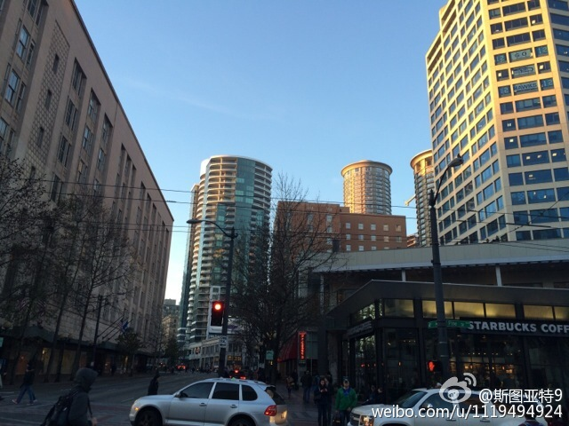
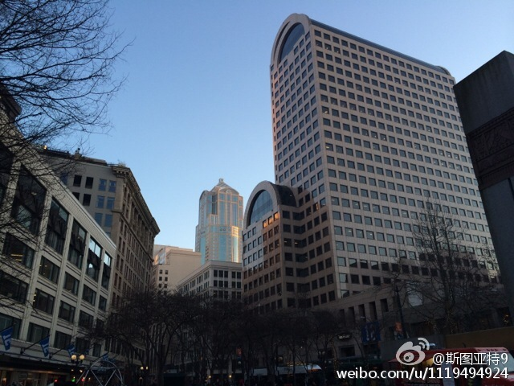
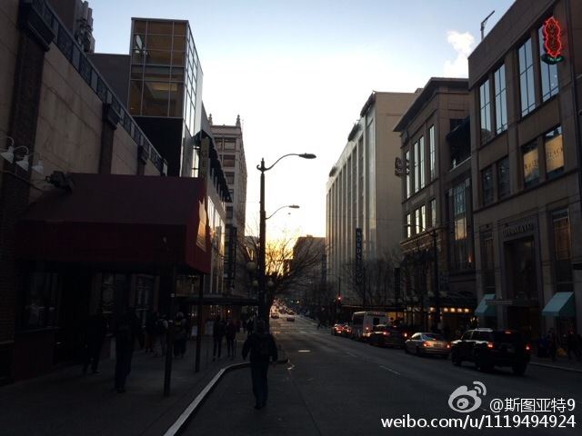
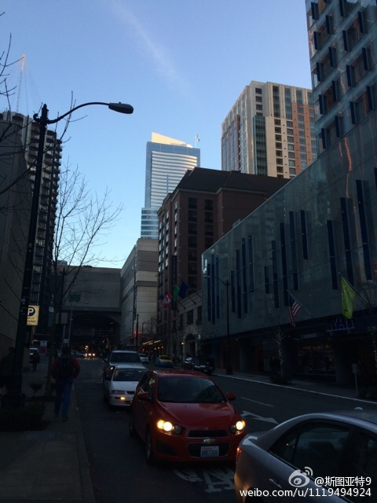
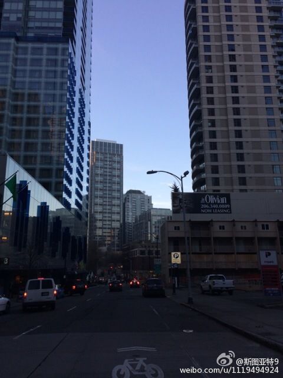
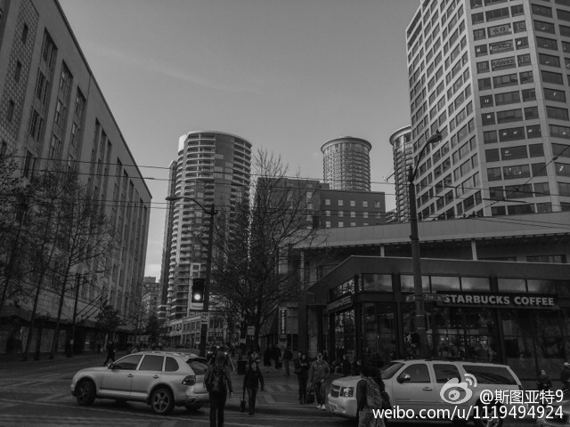
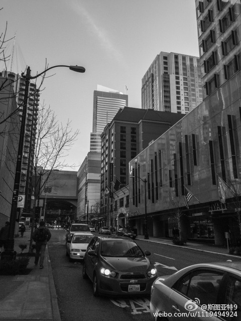
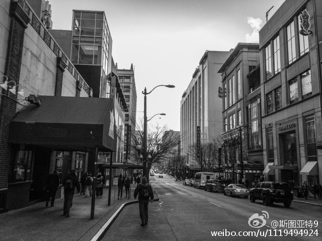
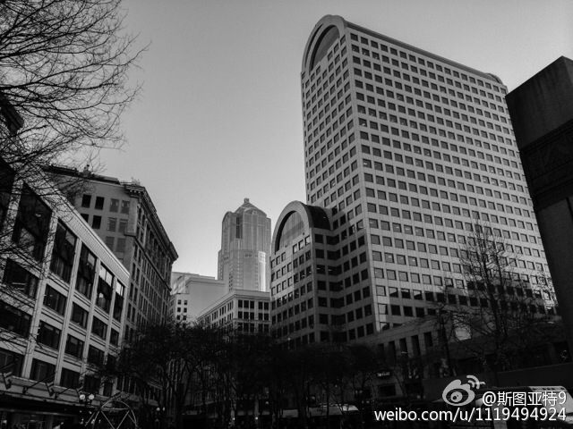

斯图亚特9
2015-01-30
为了证明不是像
@gtCarrera9
说的黑洗丫头的天气。我发一遍彩色图以正视听——是我不会修改……
Martin Luther King Jr Way S





斯图亚特9
2015-01-30
要离开西雅图了。城市好，适合处理成黑白的。
5th Ave S




斯图亚特9
2015-01-30
公立中学还是私立的啊？公立中学传教这个不符合政教分离的国家性质啊。
---
:
抱歉，作者已设置仅展示半年内微博，此微博已不可见。
斯图亚特9
2015-01-30
雾锁西雅图
I-5
 Martin Luther King Jr Way S
Martin Luther King Jr Way S